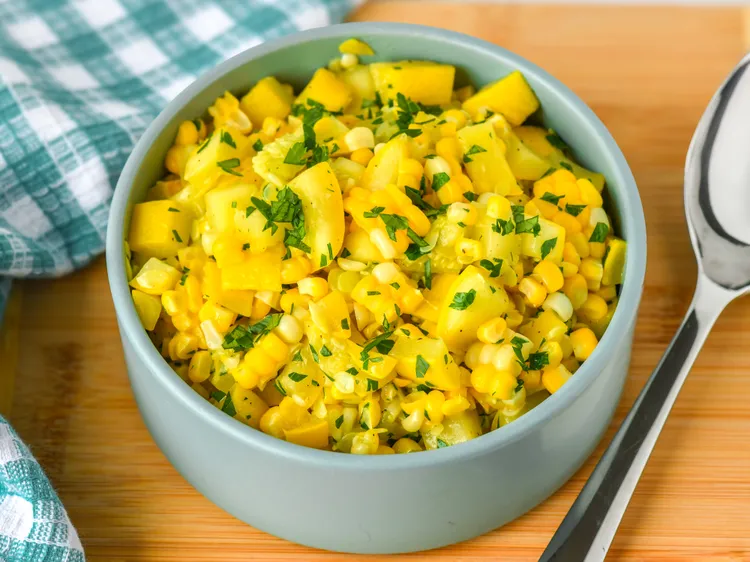

Yellow Squash and Corn Sauté

Description
Yellow Squash Corn Saute is a simple, flavorful, and delectable summer
dish. The dish features fresh sweet corn sauteed with onion, garlic,
sun-ripened cherry tomatoes, buttery yellow squash, and basil, making it
the perfect side dish for any meal.
Ingredients
- 2 ears corn, husked and cleaned
- 2 yellow squash, diced
- ½ cup water
- 2 tablespoons butter, or more to taste
- salt and ground black pepper to taste
Steps
- Step 1: Gather all ingredients.
-
Step 2: Place corn into a large pot and cover with salted water; bring
to a boil. Reduce the heat to medium-low and simmer until tender, 10 to
15 minutes. Drain and set aside to cool.
-
Step 3: While the corn is cooling, place squash into a skillet and add
water. Cook over medium heat until tender, 5 to 10 minutes. Drain any
excess water from the skillet.
-
Step 4: Cut kernels off the cobs. Stir corn, butter, parsley, salt, and
pepper into squash; cook, stirring occasionally, until heated through,
about 5 minutes.
Home